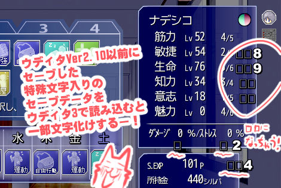
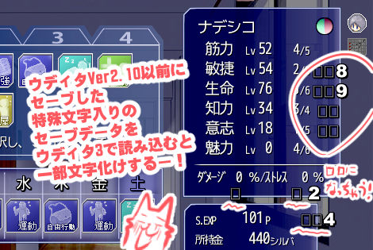

■2025-11-01 (土) シル学バグ修正祭り！＋ポケモンZ-Aを遊んで学ぶ！▼
ということで引き続き『シルフェイド学院物語』のウディタ3移行作業中です！
プログラム部分の文字コード周りの問題が次々に発覚しており、ついでにウディタ本体側のバグも色々見つかっています。直すの大変！
あとここに来て、今年1月から10ヶ月にわたって続いたウディタ3.5のバグ修正や終活作業など、『あまり創造的じゃないけどやらなきゃいけないこと』をし続けてきて義務感や使命感のリソースが枯渇してきたのか、少し心が疲れ気味です。
でも新しい持続収入源は作らないといけないので、シル学作業の完遂まではひとまずがんばらないとですね！ 休み休みやりつつ、11月中にはリファインを終わらせたいと考えています。
といっても、やっとオープニングが動いたと思ったら途中で謎のクラッシュが起きたり、暗号化データが読めなくなってて直すのが大変だったり、なぜか1行目だけ正常に表示されてるのに2行目から文章が化けたり、メールの文章だけ全部文字化けしてたりと、引き続き文字コードっぽい問題に悩まされております。
ついでにインターフェースのデザイン崩れなども多数！ まずはそこからがんばって直していきます！
↓ 一部の文章の2行目以降だけおかしくなったりメールの文章が読めなかったり！

●Ver2.10以前のセーブデータを読み込んだとき、ロード後に特殊文字を含んだ文字列が文字化けしてしまうバグ！
→ これ、直し方が分からなくて過去に一度放置していた部分だったのですが、成長していたためかうまく直すことができました！ やった！
●すごい限定的なやり方で背景を変えようとしたときに反映されないことがあったバグ！
●ファイル指定などに半角￥を使ってると一部の処理がおかしくなるバグ
（今ではファイル指定に半角￥を使うことは推奨されませんが、昔のファイル指定では自動で￥が使われていたのです）
という感じで、ウディタのEXE側やシル学のコモンイベントもまたいで、色々と対応中です。
一通り正常動作するようになってきたら、より遊びやすくするためのユーザーインターフェースの微調整や、プレイアビリティに関わる機能の拡張、顔グラフィックの修正、DLsiteに公開するための仕様調整なども行っていきます！
本作はなんとポケモンにしては珍しいリアルタイムバトル！ アニメで見たようなポケモンバトルが再現されている雰囲気で面白いですね！
↓以下は冒険中の自キャラと相棒！(Xより引用) イーブイが治療されているポスターがかわいい
なお私が好みで使う相棒は「サンダース」という電気ポケモンです。でもポケモンレジェンズシリーズではいつも進化元のイーブイが捕まえにくいのだけはホント勘弁して～！
（※前作アルセウスでは終盤までイーブイの捕獲方法に気づけなくて、サンダースとほぼ冒険できませんでした……以後はイーブイの捕獲方法だけはネタバレでも攻略でも何でも最優先に見ています）
なおZ-Aは街の中だけで冒険が進み、ポケモンが出現しそうな屋外フィールドがないため、今作では街の中にある「ワイルドエリア」内でポケモンを捕まえる形式になっています！
物語が進むにつれて街の中にどんどんワイルドエリアが増えていくため、住人の生活がポケモンたちに圧迫されていそうなのを見ると昨今のクマ事情がほんの少し頭によぎります（後に見たとき用：2025年10月頃は、クマが市街地にまで現れる事件が多発しているのです）
さらには夜にオープンする「バトルエリア」ではポケモントレーナーたちと戦えるのですが、先に相手のポケモンを殴って先制攻撃できるというヤバいシステムのおかげで、陰から敵トレーナーのポケモンを一撃死させて戦闘を開始したりできます！
「対トレーナー戦で奇襲なんてやっていいのかー！？」と思いつつも、奇襲をしたりされたりするほうが絶対面白いので、これは英断だったと思います。
こういった「奇襲したりされたりする」といったシステムは、本能の奥にある『野性味』が刺激されますよね！ 自分も本能が喜ぶゲームを作りたい！
これは『ポケモンレジェンズZ-A』に限らず『ドラゴンクエスト3 HD-2D』などにもあったのですが、ポケモンZ-Aには
『いくつ拾ってもさほどバランスを崩さない程度のものが頻繁にフィールドや地面にランダム設置されていて、歩いて拾ってるだけでも何らかの成果が出る』
という仕組みが用意されています。これ、見るたびに「いい仕組みだなー」と感じるんですよ！
特に、ポケモンZ-Aでは街を歩いてるだけではポケモンとも戦わないので経験値さえ入らず、迷ってる時間が長いと何の成果がなくて徒労感が出てきてもおかしくなかったはずです。
ですが本作では、1分も歩けば3～4個は取れるくらいの頻度で「消耗品の回復アイテム」や「経験値アップアイテム」「小さい効果のステータスアップアイテム」「換金アイテム」などのささやかなアイテムが拾えるので、プレイ時間に応じた最低限のリソースを稼ぐことができ、数分くらい迷っていてもあまり損したように感じさせないようになっているんですよ！
（※ここでいう「ささやかなアイテム」とはボールに入った価値あるアイテムではなく、上を通るだけで回収できるミニアイテムの方を指しています。それらはファストトラベルするか一定時間ごとに無限に復活している印象）
この『ランダムでアイテムが落ちていて移動するたびに拾っていけるようになっている』という仕組みは、ゲーム開発者視点で非常に重要な工夫だと感じています。
言い換えれば『プレイ時間そのものに対して報酬を返す仕組みが用意されている』とも言い換えられます！ 「歩いてるだけでとりあえずアイテムが増える」という成果が出るわけですからね！
こうやって、仮に探索が徒労に終わってもなにかしら「ゲームが進んでる感」を出せるのはとてもえらい！ しかも開発者視点では比較的、低コストで実現可能な内容というのがさらに良い！
なお、このランダム配置アイテムは『ドラゴンクエスト3 HD-2D』の方でも近い仕組みがありました。
フィールドを歩いているとランダムにアイテムが落ちているのが見えて、そこにいくとステータスアップの種や回復アイテムなどが一定頻度で拾えるようになっていた記憶があります。
こんな風に、遊んでさえいれば一定頻度でそこそこ珍しい（けどゲームバランスに重大な影響がない）強化アイテムや、よく使う消耗品が取れると、ちょっとうれしいですよね！
そうやって「ただプレイ時間を費やした見返り」としてランダムアイテムをポップさせるだけで「ゲーム全体への影響は小さいままプレイの徒労感を減らせる」というのはすばらしい工夫だと感じます！
私のRPG『シルフェイド幻想譚』や『片道勇者』でも、「ミッションに失敗しても費やしたプレイ時間分に相当する見返りを用意したい」みたいな意図があることを過去に言ったような記憶がありますが、『地面にランダム配置される小アイテム』もそういった意図を実現できる良い方法だと感じます。
これみたいに、手軽にできて効果が高い方法はどんどんまねていきたいですね！
この『森でのみ敵が出現』はプレイヤーの自由度を保つための工夫として取り入れたもので、「フィールドマップに出たからといって戦うことが目的じゃない状況もかなり多いので、ある程度、戦ったり戦わなかったりを自由に選べた方が気持ちよく遊べるだろう」という意図で入れていました。
また、『ポケットモンスター スカーレット･バイオレット』では、『ザツに済ませられるザコ戦は（少しのHPを消費して）短縮できるようにしよう！』（ただし当てるポケモンの属性やレベルが合わないと被害が増える）という工夫も取り入れられていました。これも今どきの発想ですよね！
私はこういった「RPG向けの配慮の基準」をポケモンシリーズから学ぶことがけっこう多いです。
『配慮』の部分は、遊ぶ人のライフスタイルや忙しさによってトレンドが変わり続け、常に進歩している部分です。ゆえに『優劣』も比べられやすい！
なので最新のゲームの『配慮』のトレンドはどんどん学んで進歩させていきたいですね！ そしてみんなに気持ちよく遊んでもらいましょう！
という感じで、見つかった問題は直しつつ、遊びからは学びつつ、日々を過ごしております！
引き続きウディタの修正やシル学のリファインも進めながら、適度に最新作品にふれつつ、やれる範囲で全力で進めていきます！
そしてシル学の作業が終わったら『片道勇者2』の開発に戻りましょう！
その後はクリエイティブな時間を楽しみ放題！ うおおおやるぞー！！
プログラム部分の文字コード周りの問題が次々に発覚しており、ついでにウディタ本体側のバグも色々見つかっています。直すの大変！
あとここに来て、今年1月から10ヶ月にわたって続いたウディタ3.5のバグ修正や終活作業など、『あまり創造的じゃないけどやらなきゃいけないこと』をし続けてきて義務感や使命感のリソースが枯渇してきたのか、少し心が疲れ気味です。
でも新しい持続収入源は作らないといけないので、シル学作業の完遂まではひとまずがんばらないとですね！ 休み休みやりつつ、11月中にはリファインを終わらせたいと考えています。
◆シルフェイド学院物語のウディタ3移行でバグ祭り
【一見直ったと思ってもなお文字化けバグが続く！】
前回、『ウディタ2→3の更新で文字コード変更をしましたが、(元ウディタ2の)シル学の処理内でそれらが対応できてないせいでシル学のバグ起きまくり！』とご報告していましたが、ようやく最初に出ていた文字化けバグがおおよそ直って、シル学が動作し始めるようになりました！といっても、やっとオープニングが動いたと思ったら途中で謎のクラッシュが起きたり、暗号化データが読めなくなってて直すのが大変だったり、なぜか1行目だけ正常に表示されてるのに2行目から文章が化けたり、メールの文章だけ全部文字化けしてたりと、引き続き文字コードっぽい問題に悩まされております。
ついでにインターフェースのデザイン崩れなども多数！ まずはそこからがんばって直していきます！
↓ 一部の文章の2行目以降だけおかしくなったりメールの文章が読めなかったり！
【他にもたくさんのウディタバグ！】
他にも、古いウディタからの移行であるがゆえに、シル学内からもウディタ側の問題がぞくぞく発見中です！
●Ver2.10以前のセーブデータを読み込んだとき、ロード後に特殊文字を含んだ文字列が文字化けしてしまうバグ！
→ これ、直し方が分からなくて過去に一度放置していた部分だったのですが、成長していたためかうまく直すことができました！ やった！
●すごい限定的なやり方で背景を変えようとしたときに反映されないことがあったバグ！
●ファイル指定などに半角￥を使ってると一部の処理がおかしくなるバグ
（今ではファイル指定に半角￥を使うことは推奨されませんが、昔のファイル指定では自動で￥が使われていたのです）
という感じで、ウディタのEXE側やシル学のコモンイベントもまたいで、色々と対応中です。
一通り正常動作するようになってきたら、より遊びやすくするためのユーザーインターフェースの微調整や、プレイアビリティに関わる機能の拡張、顔グラフィックの修正、DLsiteに公開するための仕様調整なども行っていきます！
◆『ポケモンレジェンズZ-A』もプレイ！
【休憩がてら遊ばせていただいております！】
開発の合間の休憩時間には、新作のポケモン『ポケットモンスターレジェンズZ-A』も遊ばせていただいております！本作はなんとポケモンにしては珍しいリアルタイムバトル！ アニメで見たようなポケモンバトルが再現されている雰囲気で面白いですね！
↓以下は冒険中の自キャラと相棒！(Xより引用) イーブイが治療されているポスターがかわいい
【たまには新作ゲームも】
— SmokingWOLF＠ウディタ作者/片道勇者2開発 (@WO_LF) October 21, 2025
『ポケモンレジェンズZ-A』、余暇に楽しませていただいております！
私の相棒はいつもサンダース。
「『きずぐすり』ってスプレーだったのか！」
「すごい、よりアニメっぽいポケモンバトルだ！」
「ついにトレーナー戦で奇襲までやり始めてる！」
などと叫んでます pic.twitter.com/OdqbQ0w7KI
なお私が好みで使う相棒は「サンダース」という電気ポケモンです。でもポケモンレジェンズシリーズではいつも進化元のイーブイが捕まえにくいのだけはホント勘弁して～！
（※前作アルセウスでは終盤までイーブイの捕獲方法に気づけなくて、サンダースとほぼ冒険できませんでした……以後はイーブイの捕獲方法だけはネタバレでも攻略でも何でも最優先に見ています）
なおZ-Aは街の中だけで冒険が進み、ポケモンが出現しそうな屋外フィールドがないため、今作では街の中にある「ワイルドエリア」内でポケモンを捕まえる形式になっています！
物語が進むにつれて街の中にどんどんワイルドエリアが増えていくため、住人の生活がポケモンたちに圧迫されていそうなのを見ると昨今のクマ事情がほんの少し頭によぎります（後に見たとき用：2025年10月頃は、クマが市街地にまで現れる事件が多発しているのです）
さらには夜にオープンする「バトルエリア」ではポケモントレーナーたちと戦えるのですが、先に相手のポケモンを殴って先制攻撃できるというヤバいシステムのおかげで、陰から敵トレーナーのポケモンを一撃死させて戦闘を開始したりできます！
「対トレーナー戦で奇襲なんてやっていいのかー！？」と思いつつも、奇襲をしたりされたりするほうが絶対面白いので、これは英断だったと思います。
こういった「奇襲したりされたりする」といったシステムは、本能の奥にある『野性味』が刺激されますよね！ 自分も本能が喜ぶゲームを作りたい！
【いいなと思った工夫『ランダムアイテムが頻繁に落ちてる』】
で、今回地味ながら特にいいと思った工夫をご紹介！これは『ポケモンレジェンズZ-A』に限らず『ドラゴンクエスト3 HD-2D』などにもあったのですが、ポケモンZ-Aには
『いくつ拾ってもさほどバランスを崩さない程度のものが頻繁にフィールドや地面にランダム設置されていて、歩いて拾ってるだけでも何らかの成果が出る』
という仕組みが用意されています。これ、見るたびに「いい仕組みだなー」と感じるんですよ！
特に、ポケモンZ-Aでは街を歩いてるだけではポケモンとも戦わないので経験値さえ入らず、迷ってる時間が長いと何の成果がなくて徒労感が出てきてもおかしくなかったはずです。
ですが本作では、1分も歩けば3～4個は取れるくらいの頻度で「消耗品の回復アイテム」や「経験値アップアイテム」「小さい効果のステータスアップアイテム」「換金アイテム」などのささやかなアイテムが拾えるので、プレイ時間に応じた最低限のリソースを稼ぐことができ、数分くらい迷っていてもあまり損したように感じさせないようになっているんですよ！
（※ここでいう「ささやかなアイテム」とはボールに入った価値あるアイテムではなく、上を通るだけで回収できるミニアイテムの方を指しています。それらはファストトラベルするか一定時間ごとに無限に復活している印象）
この『ランダムでアイテムが落ちていて移動するたびに拾っていけるようになっている』という仕組みは、ゲーム開発者視点で非常に重要な工夫だと感じています。
言い換えれば『プレイ時間そのものに対して報酬を返す仕組みが用意されている』とも言い換えられます！ 「歩いてるだけでとりあえずアイテムが増える」という成果が出るわけですからね！
こうやって、仮に探索が徒労に終わってもなにかしら「ゲームが進んでる感」を出せるのはとてもえらい！ しかも開発者視点では比較的、低コストで実現可能な内容というのがさらに良い！
なお、このランダム配置アイテムは『ドラゴンクエスト3 HD-2D』の方でも近い仕組みがありました。
フィールドを歩いているとランダムにアイテムが落ちているのが見えて、そこにいくとステータスアップの種や回復アイテムなどが一定頻度で拾えるようになっていた記憶があります。
こんな風に、遊んでさえいれば一定頻度でそこそこ珍しい（けどゲームバランスに重大な影響がない）強化アイテムや、よく使う消耗品が取れると、ちょっとうれしいですよね！
そうやって「ただプレイ時間を費やした見返り」としてランダムアイテムをポップさせるだけで「ゲーム全体への影響は小さいままプレイの徒労感を減らせる」というのはすばらしい工夫だと感じます！
私のRPG『シルフェイド幻想譚』や『片道勇者』でも、「ミッションに失敗しても費やしたプレイ時間分に相当する見返りを用意したい」みたいな意図があることを過去に言ったような記憶がありますが、『地面にランダム配置される小アイテム』もそういった意図を実現できる良い方法だと感じます。
これみたいに、手軽にできて効果が高い方法はどんどんまねていきたいですね！
【「配慮」の基準とトレンド】
思えば、ポケモンシリーズから私が「新時代のRPG基準」として学んできたことは多く、たとえば私の『シルフェイド幻想譚』で導入した『森でしか敵が出現しない』方式もポケモンシリーズを参考にしたものでした。この『森でのみ敵が出現』はプレイヤーの自由度を保つための工夫として取り入れたもので、「フィールドマップに出たからといって戦うことが目的じゃない状況もかなり多いので、ある程度、戦ったり戦わなかったりを自由に選べた方が気持ちよく遊べるだろう」という意図で入れていました。
また、『ポケットモンスター スカーレット･バイオレット』では、『ザツに済ませられるザコ戦は（少しのHPを消費して）短縮できるようにしよう！』（ただし当てるポケモンの属性やレベルが合わないと被害が増える）という工夫も取り入れられていました。これも今どきの発想ですよね！
私はこういった「RPG向けの配慮の基準」をポケモンシリーズから学ぶことがけっこう多いです。
『配慮』の部分は、遊ぶ人のライフスタイルや忙しさによってトレンドが変わり続け、常に進歩している部分です。ゆえに『優劣』も比べられやすい！
なので最新のゲームの『配慮』のトレンドはどんどん学んで進歩させていきたいですね！ そしてみんなに気持ちよく遊んでもらいましょう！
という感じで、見つかった問題は直しつつ、遊びからは学びつつ、日々を過ごしております！
引き続きウディタの修正やシル学のリファインも進めながら、適度に最新作品にふれつつ、やれる範囲で全力で進めていきます！
そしてシル学の作業が終わったら『片道勇者2』の開発に戻りましょう！
その後はクリエイティブな時間を楽しみ放題！ うおおおやるぞー！！